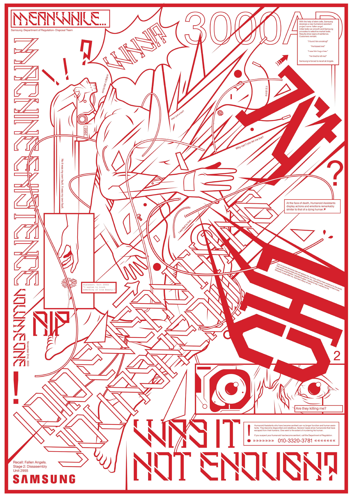
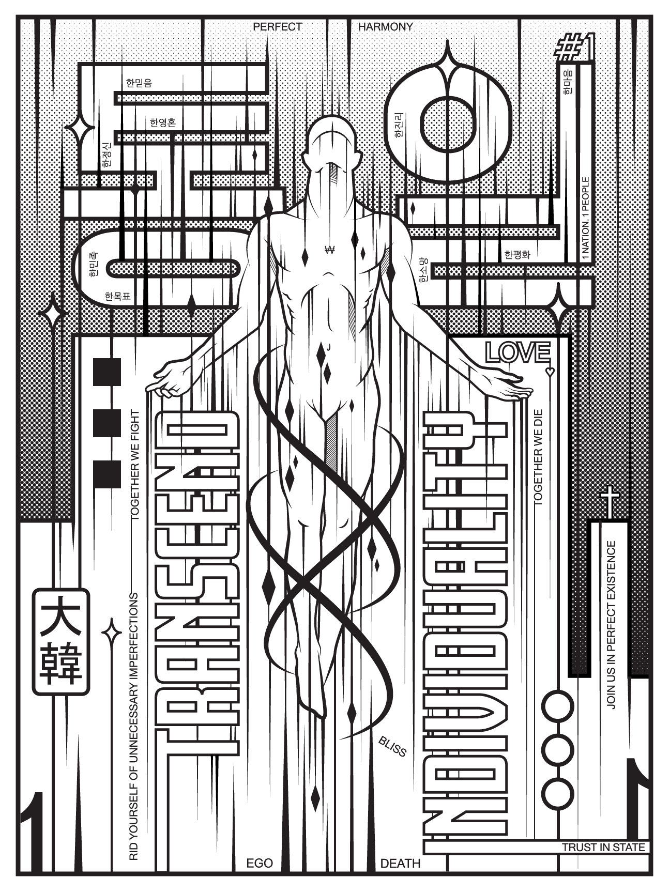
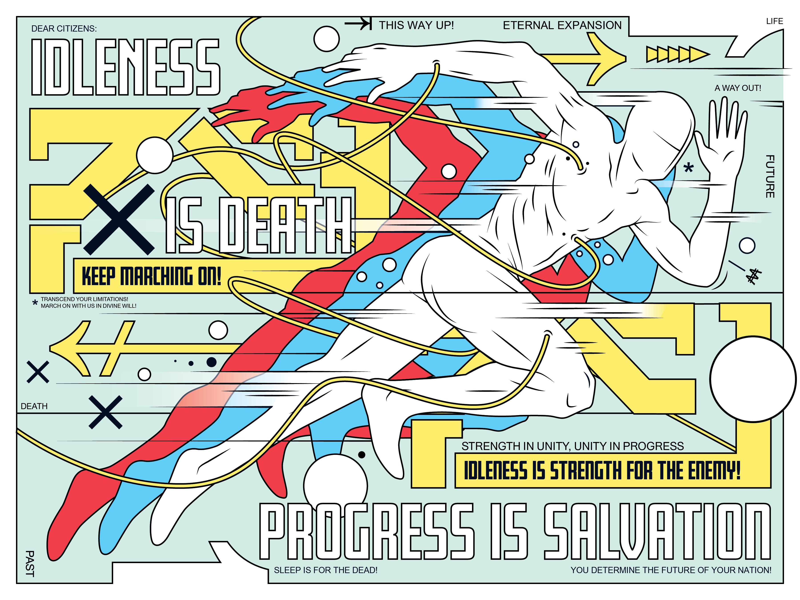
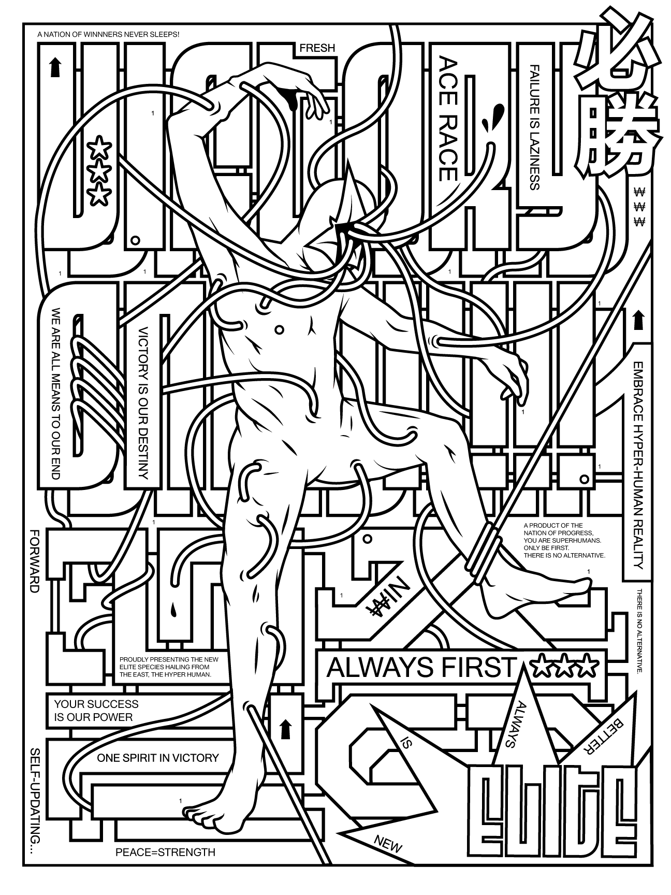
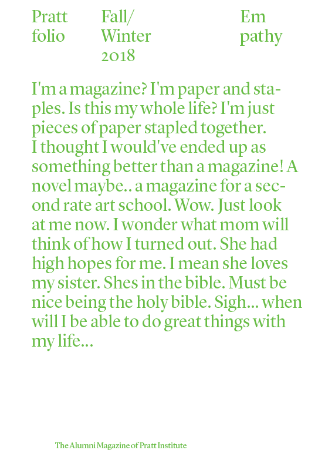
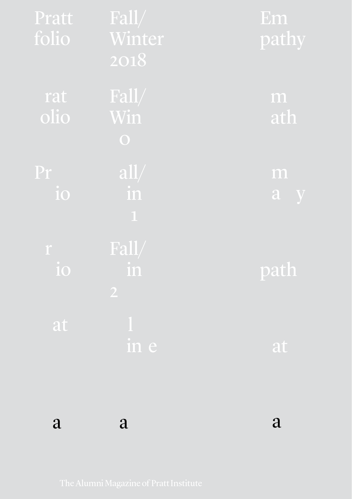

12/2/18 a strange man asked me to write about freedom
How can I write about freedom when I am not free. How can I lie and tell you that I have some great revelation for you. There is nothing I know about freedom and nothing I can say. All I know is of its absence. I feel it every second of my life, all of it a cycle of whims. I am trapped in a body filled to the brim with desire and an ego larger than life. I am a slave to my own mind and a slave to the world. I wonder then, when can I be free like the flower. The flower that is. Me that is. It is in this absence of freedom that I desperately search for meaning. It is here that I writhe and cry, like a child who didn’t get what he wanted. Then I begin to see myself as just that, a child. That it was never freedom that I was looking for, but another manifestation of my ego. That even in the search for freedom I am the most unfree. Where else then, can I find freedom but in the absence of it? Where else can I find myself but in the absence of myself?
10/22/18 It's not a good time
“I wonder if things can be better and I wonder what we can do. We who are intermediaries of culture. Do we define it or do we follow suit of people in power. What can a Graphic Designer do but make graphics. To be blind. We are the accelerators of the capitalist machine. Is there no hope for beauty in Graphic Design? A human soul. Style can be dismissed as narcissistic masturbation. Why? Because of course the client is first! We have a greater responsibility to society at large! But what society? A society that seeks to control us? The bombardment of information all specially thought out. We who are the makers of ads hate when ads interfere with our movies.This image, this font, this color, this cut, this scene. I say a better society starts with me! When will capitalist expansionism stop?” These things are the things I think about. I don’t know what it’s like to be stationary. As a third culture kid, I was always a foreigner. I wonder where home is and who I am. I guess that is why I have a fixation with Korea. I wonder if that place could be my home. That is where family is after all. I examine Korea to try and find what is wrong. The education system, the military system, the architecture, the media, k-pop and the mindless souls, the suicides, the neglected generation of elderly without pension, that demonic intercourse between confucianism and capitalism that resulted from post-war hyper-modernization. I try to do this by subverting the system. I ask myself this question: hey if North Korea has propaganda what would South Korean propaganda look like? I do this and think it looks good. But then I look at it and ask myself: is this going to really break the system? Is this not a way for you to get a better job? Are you not just part of the machine? Why do you hate the system so much? Because a lack of a home leaves you international. An international capitalist world: clean cut modern, with its bazaar of ads, with its automatic flushing toilets. There is my home and there I feel cold and unhuman. Today like the many other days I think about dropping out and oil painting, I like the smell and that is reason enough. Everything has a brand. I am a brand, I am an ad. I am a maker of an ad. I am using a brand. Everything I touch has a brand, even the tree has been placed. A world is created for me and I am expected to work for it. I think about dropping out and working in my dad’s factory making gloves. I do this to try and understand how they feel. How the bottom of the food chain feels. I will do this and I will paint on the weekends. But of course you won’t will you? Don’t you want to make money for your parents? Don’t you? Buy your cousins happy meals and shit? I mean you’re parents need to retire right? No I will live with my grandma and there I will paint as well. I want to be happy. Perhaps that is my thesis. But I digress and take a step back. The thing about uniformity in Korean Culture and why it’s so poisonous is because it’s a beautiful thing. It stems from years of being the underdog. The years of colonization and the years of war. Us. It stems from wanting to protect each other and care for each other. “You are one of us and you should do what we do, it’s the best way, and we want the best for you.” Of course like many of the systems in place today it can’t overtly be bad, otherwise everyone would know what is wrong. It’s the same for capitalism in general, the variety of choice but in reality no choice at all. Defamiliarization: the technique of presenting common things in uncommon ways. The series of posters are a means to show common aphorisms and societal values in a light that is almost dystopian. In that way I seek to change certain views and values that we have. This is my propaganda. But is it enough to merely show what is bad? I begin to think that this senior thesis project is merely the start of the things I want to talk about in my work. That I may not have the answer yet. Then perhaps this is just a testament of skill to get a job, a matter of creating form, because after all I enjoy it.
4/25/18 Finding Meaning---a valuable mentor
I spent this semester thinking about why I’m a Graphic Designer and the role of the Graphic Designer in society. I think there’s something about being away from Pratt for 2 years that made me like this. Coming back I really wanted to find meaning in what I do. But being back I was a little disheartened. Nothing had really changed after two years. The way we (my generation) was approaching Graphic Design really turned me off. It turned me off to the point that I considered Graphic Design as the simple act of framing. I saw more and more thoughtless design and I saw that it was being appreciated. I went down a rabbit hole of hopelessness. I thought that Graphic Design was not good enough for me, or maybe I wasn’t fit to be a Graphic Designer. Narcissism I like Olmsted. I’ve always loved architects and their grand ideas. I love the idea that Architects in a way can design the future of humanity. The Grandness of it was enticing. Because I believed that I was destined to be grand. And I began to think about my future and the ultimate usage of my brain. The ultimate design. “The thing about perfection is that it is unknowable, it's impossible, but it's also right in front of us, all the time” Kevin Flynn, Tron Legacy. Those words speak to me. The problem with the idea of Grandness and “Ultimate Design” Is that ultimately the ideas are human. They are no greater than me thinking of getting a beer after class. I looked towards astronomy and things became a little clearer. We are so small compared to the vastness of the universe that even ideas of grand schemes really become as small as this period. We are all just humans finding our own way. I began to consider where I find value. And where I find meaning. I asked myself this question: If I were to die tomorrow and I could do anything, what would I do? Clarity I would relieve my happiest memories. I think that’s when it really came together, and why I do what I do. As communication designers we are memory makers. We have the power to create beautiful marks in someone’s history. This is where I find meaning in what I do,
But, I still think that there’s a lot of problems with our approach to design. I like being honest. Are you happy with what you do? I’m so happy. I’m so excited for the future. I see more and more style as a disguise for stupidity. I begin to wonder if there is a fundamental problem with design education. Why do we make a clear distinction between art and design? In the end isn’t it just communication and expression? I see interesting people everyday and each person has a story to tell, that’s what makes life so fun. But then I see our work and I see more of the same boring graphic design standard. Does that really have meaning to you? If it doesn’t why would it to anyone else? Standard I see communication design as much more than graphic design. I see it as a way of tapping into memory banks and making connections with people. When we make our work we have a chance to connect with other people’s memory banks. The universality of letters and images lend us a helpful hand. Meaningful My images, my words. They are my own. They are a record of my own connections and my own ideas of beauty, my own memory bank. The fact that everyone is so different makes this world beautiful. I’m done thinking about Graphic Design as a profession, because it doesn’t have to represent me. I want to make work that makes me happy and I want people to connect to it. I want that connection to be a beautiful mark in their history.
Hi my name is Kyu, I am a graphic designer & illustrator currently based in Brooklyn, N.Y. I was born in Anyang, South Korea and moved to Central Java, Indonesia when I was one. Somehow I ended up here. I am currently studying Communications Design at Pratt Institute. resume








